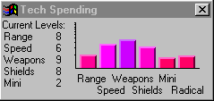

Playing Spaceward Ho!
The Tech Spending Window

Use the Tech Spending Window to show what technologies you want to develop the most. You may choose to research different technologies, depending on your strategy, philosophy, and the current game situation. For the most part, you don't need to fool with this window much.
Remember that the Tech Spending Window just divides up the Tech money, and doesn't decide how much Tech money there is - you set that with the Budget Window bar charts.